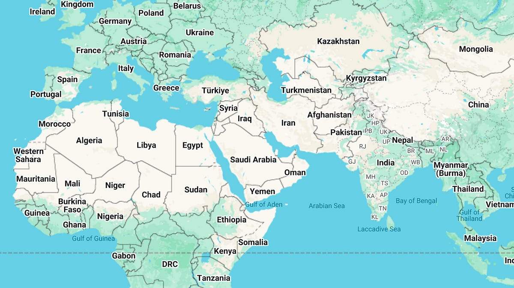
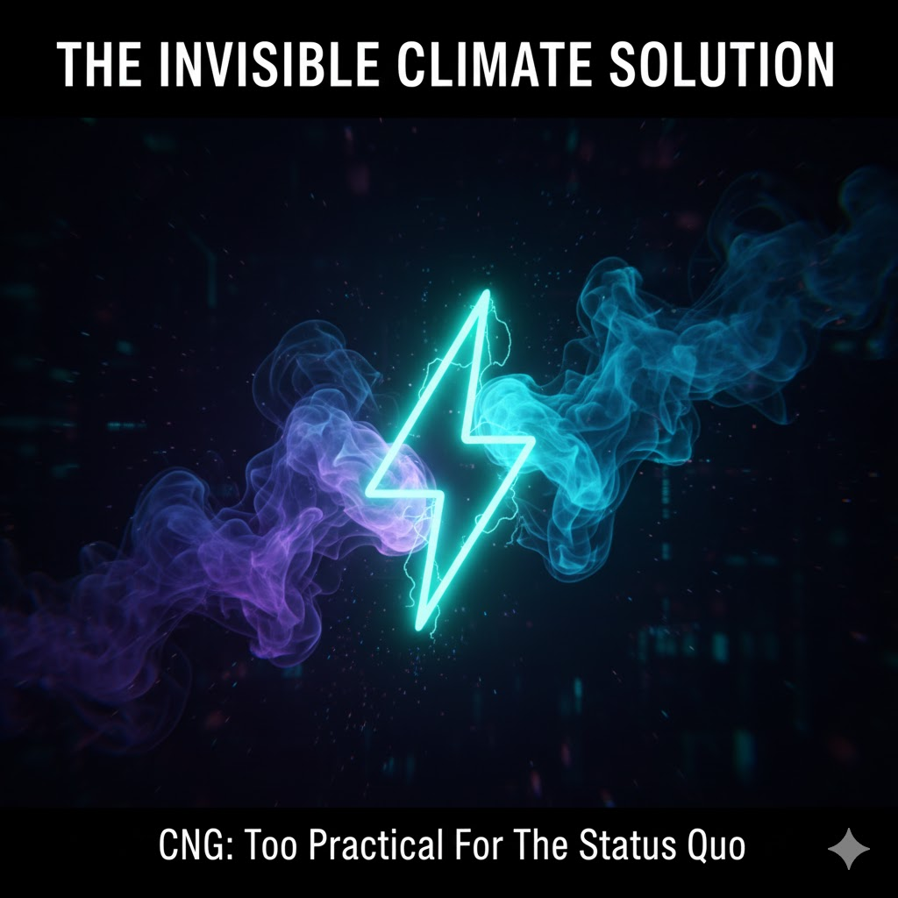
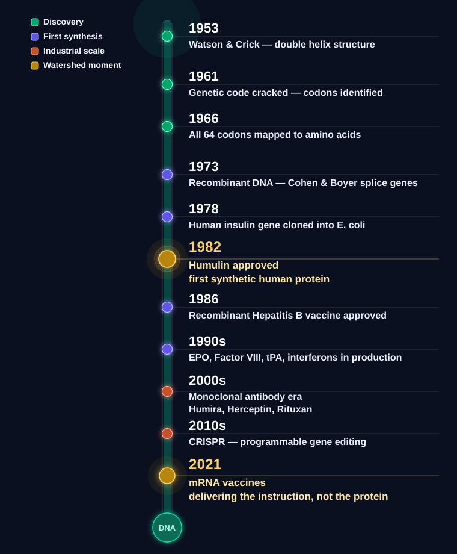

Owen's Applied Thinking


WaterGlobal water engineering and infrastructure. · 11 articles

CNGCompressed natural gas as a bridge fuel strategy. · 5 articles

ScienceGenomics, DNA sequencing and medicine, from an engineer's view. · 4 articles
 Vectors
VectorsSingle pieces outside a series. · 8 articles